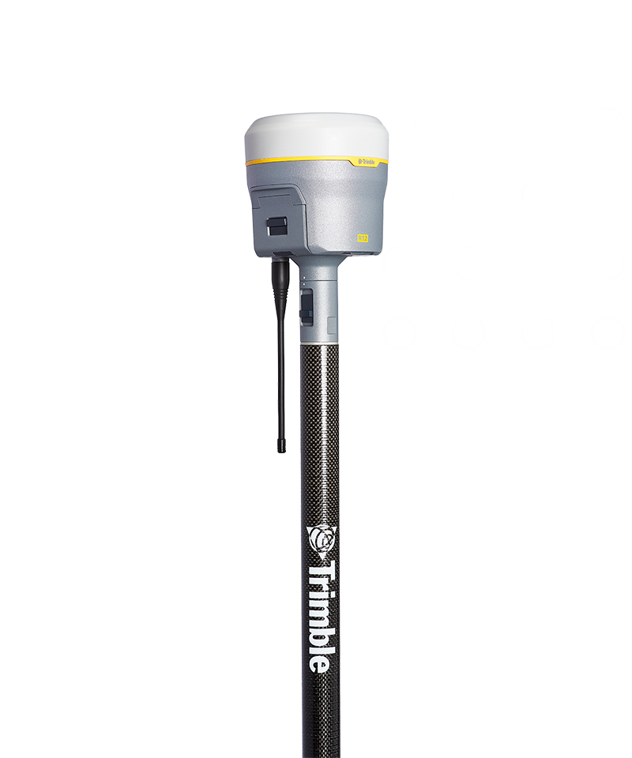

DGPS Trimble R12i

| DGPS Trimble R12i | |
|---|---|
| Location: | Lab. 1.87 Building 7 |
| Manager: | Margarida Ramires |
| Operator: | User |
| Operating Principle: | Global Navigation Satellite System (GNSS) |
| Manufacturer: | Trimble |
| Model: | R12i |
| Type: | DGPS |
| Website: | Trimble |
The Trimble® R12i GNSS Receiver is a high-precision geodetic GNSS system designed for geospatial data acquisition, land surveying, mapping, and environmental monitoring applications. The instrument combines advanced satellite positioning technologies with integrated inertial sensors, enabling centimetre-level measurements even under demanding field conditions, such as areas with dense vegetation, physical obstructions, or urban environments.
Powered by the Trimble ProPoint® GNSS positioning engine, the R12i provides advanced tracking and signal processing capabilities for multiple GNSS constellations, increasing satellite availability and improving measurement robustness in environments where satellite signal reception may be limited. This technology also reduces the effects of multipath interference and enhances positioning reliability in challenging field conditions.
One of the R12i's key distinguishing features is the integration of Trimble TIP™ (Trimble Inertial Platform) technology, which is based on an Inertial Measurement Unit (IMU). This feature enables measurements to be performed without the need to keep the survey pole perfectly vertical, automatically compensating for pole tilt and calculating the correct position of the pole tip. This capability significantly increases field productivity by allowing points to be collected in difficult-to-access locations, such as near structures, on slopes, or in areas with physical obstructions.
The system supports Real-Time Kinematic (RTK) surveying, Network RTK via NTRIP/VRS, static surveys, and GNSS post-processing. Integration with Trimble Access™ software enables fieldwork configuration, data collection, stakeout operations, and comprehensive management of georeferenced survey projects.
Calendar / Availability
RequestMain Applications
- High-precision topographic surveys;
- Georeferencing of sampling points;
- Environmental mapping;
- Coastal monitoring;
- Geomorphology studies;
- Habitat mapping;
- Geological surveys;
- Support for drone surveys (GCPs and control points);
Main Advantages:
- Real-time centimeter-based (RTK) positioning;
- High precision and repeatability;
- Support for multiple GNSS constellations;
- Trimble ProPoint® GNSS technology for enhanced performance in challenging environments;
- Automatic tilt compensation using Trimble TIP™ IMU technology;
- Measurement without the need for constant leveling of the rod;
- Better performance near vegetation, buildings, and obstacles;
Technical Specifications:
| Specification | Value |
|---|---|
| Manufacturer | Trimble Inc. |
| Model | R12i GNSS Receiver |
| Software | Trimble™ |
| GNSS Technology | Trimble ProPoint® GNSS |
| Tilt Compensation Technology | Trimble TIP™ (IMU – Inertial Measurement Unit) |
| Horizontal Accuracy (RTK) | ±8 mm + 1 ppmm RMS |
| Vertical Accuracy (RTK) | ±15 mm + 1 ppmm RMS |
| Horizontal DGPS | ±25 cm + 1 ppmm RMS |
| Vertical Static Accuracy | ±50 cm + 1 ppmm RMS |
| Refresh Rate | Até 20 Hz |
| Number of GNSS Channels | 672 channels |